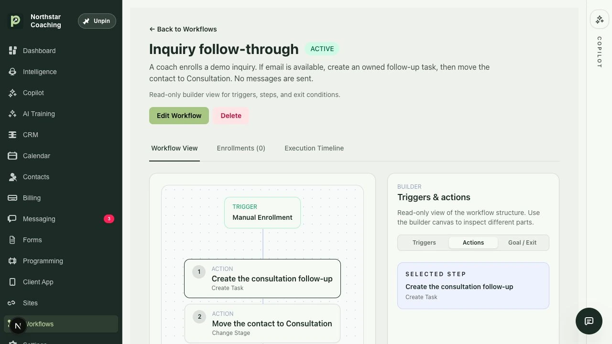
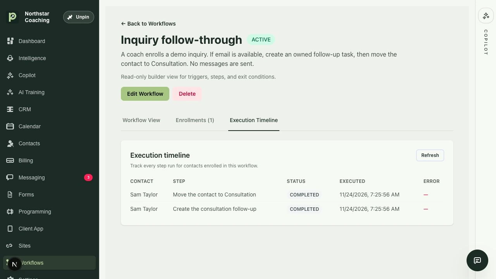

TENANCY & AI
Workspace context follows requests through role and entitlement guards into explicitly tenant-scoped services. Copilot tools operate within that same application context.
System architecture and how I verified the coaching workflows.
Workspace context follows requests through role and entitlement guards into explicitly tenant-scoped services. Copilot tools operate within that same application context.
Signed Stripe webhooks, duplicate-event checks, and purchase reconciliation paths connect provider events to workspace records and downstream workflows.
Templates, client assignments, and completed workouts have separate lifecycles. Replacement and synchronization rules account for session progress and locks.
Manual enrollment. Check for an email, create a consultation task, then move the lead to Consultation.

Sam Taylor was enrolled once. The execution API recorded both steps as completed.

One new task, “Book Sam’s coaching consultation.” Stage changed from New inquiry to Consultation.

tests/e2e/assistant-guided.spec.ts
test('dashboard surfaces assistant mode and intelligence summary', async ({ page }) => {
await login(page);
await page.goto(`${baseUrl}/dashboard`);
await expect(page.getByRole('heading', { name: /Intelligence Queue/i })).toBeVisible();
await expect(page.getByText(/Suggest only|Guided|Policy automation/i).first()).toBeVisible();
await expect(page.getByText(/Assistant tasks/i)).toBeVisible();
});The suite covers signed-in assistant screens. The workflow run above was verified separately through the app and API.